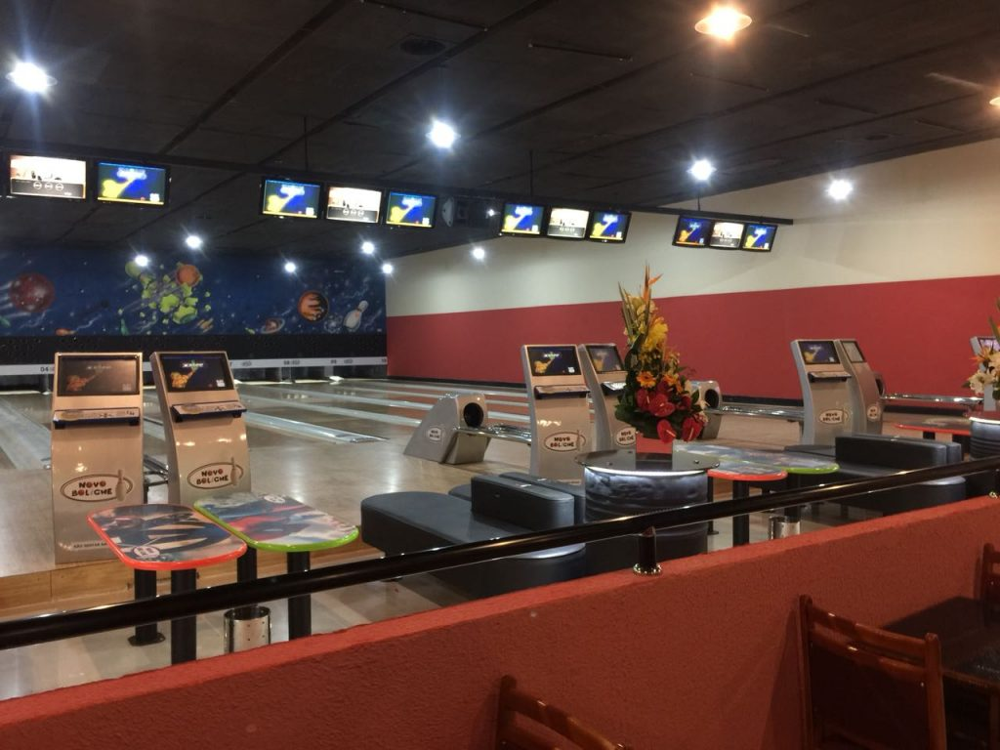
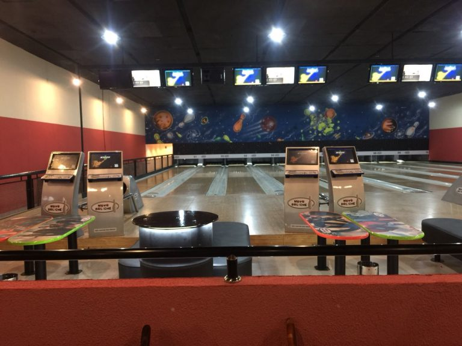
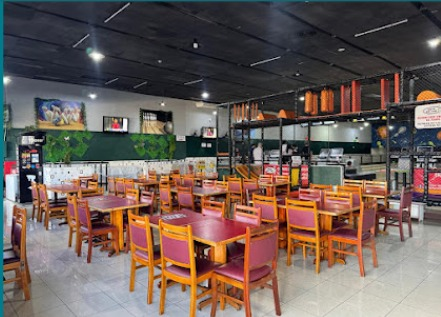

Quem Somos
O Novo Boliche é o destino certo para quem busca diversão de verdade em São Paulo. Com 10 pistas profissionais, ambiente totalmente climatizado e uma seleção completa de jogos eletrônicos, oferecemos uma experiência que agrada todas as idades — da criança ao adulto.
Para quem quer celebrar em grande estilo, nossos camarotes exclusivos são o espaço perfeito para aniversários, confraternizações e eventos especiais, com toda a estrutura e o aconchego que a sua festa merece.
Estamos localizados na Avenida Guilherme Cotching, 1453 – Vila Maria, São Paulo, prontos para receber você, sua família e seus amigos.
Venha jogar, comemorar e criar memórias com a gente!
Nosso Espaço

